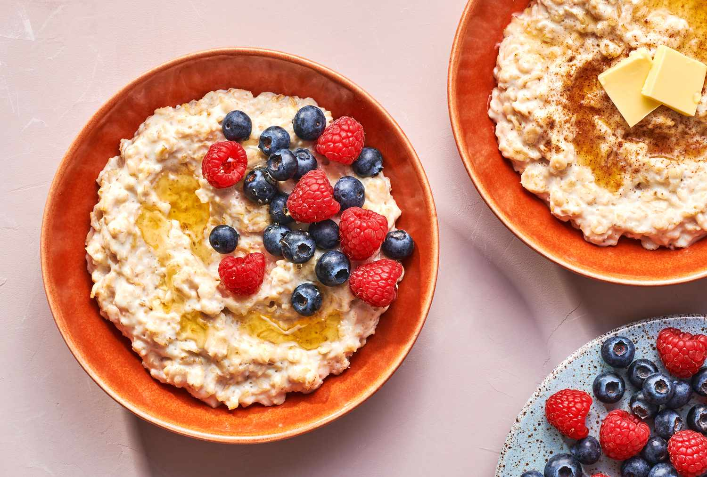

Porridge

Enjoy a warm, comforting bowl of creamy porridge, perfect for a cozy breakfast.
Ingredients:
- 1 cup rolled oats
- 2 cups milk (or water for a lighter version)
- 1/4 tsp salt
- 1 tbsp honey or maple syrup (optional)
- Fresh fruits, nuts, and seeds for topping
Instructions:
- Cook the oats:
- In a medium saucepan, bring the milk (or water) and salt to a boil.
- Stir in the oats and reduce the heat to low. Simmer, stirring occasionally, until the oats are tender and the porridge is creamy, about 5-7 minutes.
- Sweeten (optional):
- If desired, stir in honey or maple syrup to sweeten the porridge.
- Serve:
- Divide the porridge into bowls and top with fresh fruits, nuts, and seeds of your choice.